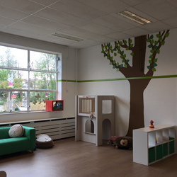
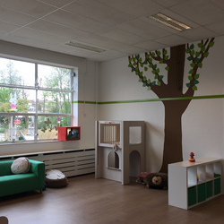
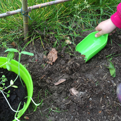

Kinderdagverblijf 'Het Vlindertje' bestaat op dit moment uit één verticale groep, gevestigd in het oude schoolgebouw aan de Lelstraat in Alblasserdam. Dit pand is de ideale plek voor kinderdagverblijf 'Het Vlindertje'. Er is ruimte genoeg om binnen en buiten te spelen. Verder is het goed bereikbaar in het centrum van Alblasserdam en is er voldoende parkeergelegenheid.
We vinden het heel belangrijk dat kinderen zich in hun eigen tempo kunnen ontwikkelen en willen hen daar ook de ruimte voor geven. Jonge kinderen leren vooral door het 'doen' en dan het liefst spelenderwijs, zowel binnen als buiten.
We zijn trots op ons idee voor het buitenterrein. Een natuurtuin met verschillende niveaus en structuren. Het ervaren van en spelen met verschillende structuren zoals, gras, zand, boomschors en water is voor de meeste kinderen een heerlijke ervaring. Geen recht en vlak tegelplein, maar een afwisselende speelplek. Door ook een kleine moestuin te creëren kunnen ze zelf van heel dichtbij meemaken hoe en waar de groente en het fruit vandaan komen. Het eten wat wij de kinderen aanbieden zal zoveel mogelijk biologisch zijn. Lekker en gezond!
Groepsindeling
Kinderen leren niet alleen van spelen, maar ook van elkaar. Daarom zijn wij voorstander van verticale groepen, dus kinderen in de leeftijd van 0 tot 4 jaar in dezelfde groep. Hierdoor kunnen ze van elkaar leren en met elkaar leren samen spelen. Natuurlijk houden we bij activiteiten die we aanbieden rekening met de leeftijd van een kind. We streven ernaar om de kinderen zo min mogelijk verschillende leidsters op de groep te laten zien. Hierdoor (her)kent een kind de leidsters sneller en kan er een band opgebouwd worden. Dit bevordert het gevoel van veiligheid van het kind, waardoor het zich vrijer voelt en dat bevordert weer de ontwikkeling van het kind.
We hopen je snel eens te zien op onze locatie, kom gerust eens langs!